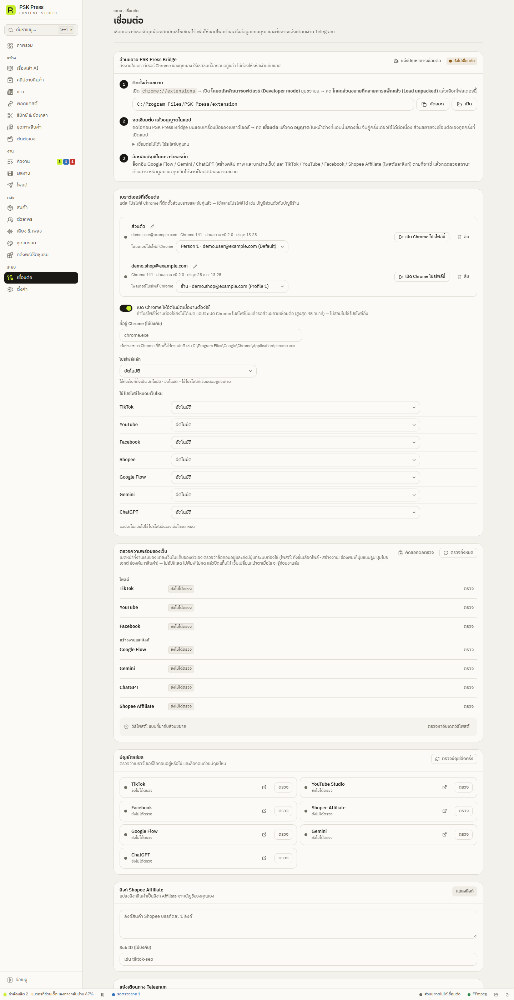
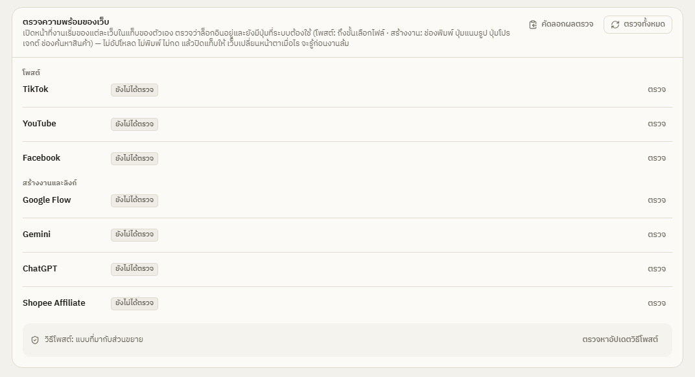

เริ่มต้น
เชื่อมเบราว์เซอร์และบัญชี
ติดตั้งส่วนขยาย PSK Press Bridge ใน Chrome จับคู่กับแอป แล้วล็อกอินเว็บที่ต้องใช้ — ทำครั้งเดียวใช้ได้ตลอด
ส่วนขยาย PSK Press Bridge ให้แอปสั่งงานในเบราว์เซอร์ Chrome ของคุณ:
- ใช้ Gemini / ChatGPT เขียนบทและวาดภาพ
- ใช้ Google Flow ทำคลิปวิดีโอ
- โพสต์ลง TikTok / YouTube / Facebook
- ดึงข้อมูลสินค้าจาก Shopee
ส่วนขยายใช้บัญชีที่คุณล็อกอินไว้แล้วใน Chrome แอปไม่เคยเห็นหรือเก็บรหัสผ่านของคุณ


ขั้นที่ 1 — ติดตั้งส่วนขยาย
- ในแอป เปิดเมนู เชื่อมต่อ ขั้นที่ 1 ติดตั้งส่วนขยาย จะแสดงที่อยู่โฟลเดอร์ส่วนขยาย กด คัดลอก
- ใน Chrome เปิด
chrome://extensions(พิมพ์ในช่องที่อยู่) - เปิดสวิตช์ โหมดนักพัฒนาซอฟต์แวร์ (Developer mode) มุมขวาบน
- กด โหลดส่วนขยายที่คลายการแพ็กแล้ว (Load unpacked) แล้ววางที่อยู่โฟลเดอร์ที่คัดลอกไว้ (หรือกด เปิด ในแอปเพื่อเปิดโฟลเดอร์นั้น)
- จะเห็นการ์ด PSK Press Bridge — กดไอคอนจิ๊กซอว์บนแถบเครื่องมือแล้วปักหมุดไอคอนไว้ เพื่อให้กดง่าย
ขั้นที่ 2 — กดเชื่อมต่อ แล้วอนุญาตในแอป
- เปิดแอป PSK Press ไว้
- ใน Chrome กดไอคอน PSK Press Bridge → เชื่อมต่อ
- แอปจะเด้งหน้าต่าง เบราว์เซอร์ขอเชื่อมต่อกับ PSK Press พร้อมชื่อโปรไฟล์ Chrome — ตรวจว่าเป็นเครื่องของคุณ แล้วกด อนุญาต
- ป้ายในหน้าเชื่อมต่อเปลี่ยนเป็น เชื่อมต่อแล้ว และแถบสถานะด้านล่างของแอปจะไม่ขึ้น “ส่วนขยายไม่ได้เชื่อมต่อ” อีก
จับคู่ครั้งเดียวใช้ได้ตลอด ครั้งต่อไปที่เปิด Chrome และแอป ส่วนขยายจะเชื่อมต่อเอง
ขั้นที่ 3 — ล็อกอินบัญชีในเบราว์เซอร์นั้น
ใน Chrome โปรไฟล์ที่เชื่อมไว้ ล็อกอินเว็บที่คุณจะใช้:
| เว็บ | ใช้ทำอะไร |
|---|---|
| Gemini (gemini.google.com) | เขียนบทและวาดภาพ โดยไม่ต้องใช้คีย์ API |
| ChatGPT (chatgpt.com) | เขียนบทและวาดภาพ ใช้แทน Gemini ได้ |
| Google Flow (labs.google/flow) | ทำคลิปวิดีโอ AI (ใช้เครดิต Flow ของบัญชีคุณ) |
| TikTok, YouTube Studio, Facebook | โพสต์คลิป |
| Shopee Affiliate | แปลงลิงก์สินค้าเป็นลิงก์ Affiliate |
จากนั้นเลื่อนลงไปแผง บัญชีโซเชียล ในหน้าเชื่อมต่อ แล้วกด ตรวจบัญชีอีกครั้ง แต่ละเว็บจะขึ้นสถานะ:
- ล็อกอินอยู่ (สีเขียว) พร้อมชื่อบัญชี
- ยังไม่ล็อกอิน — กดไอคอนเปิดหน้าล็อกอิน
- ยังไม่ได้ตรวจ
ปุ่ม ตรวจ ในแต่ละแถวใช้ตรวจทีละเว็บ ถ้าขึ้นว่า ยังไม่เห็นชื่อบัญชี ให้เปิดเว็บนั้นไว้สักแท็บ แล้วกดตรวจอีกครั้ง
ระหว่างที่แอปทำงานในเบราว์เซอร์
- ไม่ต้องเปิด Chrome ไว้ด้านหน้า — ใช้โปรแกรมอื่นหรือให้หน้าต่างอื่นบังได้ แอปทำให้แท็บที่กำลังทำงานยังทำงานเต็มที่ แต่อย่าปิด Chrome หรือปิดแท็บที่กำลังทำงาน
- Chrome จะแสดงแถบว่า “PSK Press Bridge” เริ่มแก้ไขข้อบกพร่องเบราว์เซอร์นี้ (started debugging this browser) ระหว่างงาน เป็นเรื่องปกติ แถบหายไปเองเมื่องานเสร็จ ถ้ากด ยกเลิก ที่แถบนี้ งานที่ต้องอัปโหลดไฟล์หรือสร้างคลิปอาจไม่สำเร็จ
- ถ้ากด ยกเลิก ไปแล้ว งานนั้นจะแจ้งว่า มีการกด "ยกเลิก" ที่แถบ … ระหว่างงาน — กดสร้างใหม่แล้วปล่อยแถบไว้จนงานเสร็จ
- หน้าต่างแยก — ส่วนขยายเปิดงานในหน้าต่าง Chrome ของตัวเอง ไม่ยุ่งกับแท็บที่คุณใช้อยู่ ปิดได้ในป๊อปอัปส่วนขยาย (แท็บ ตั้งค่า → เปิดงานในหน้าต่างแยก)
- ถ้าหน้าต่างที่ใช้ทำงานเล็กกว่าที่เว็บต้องใช้ (ประมาณ 1280×860 สำหรับ Google Flow, TikTok, YouTube และ Shopee) แอปจะขยายหน้าต่างให้ก่อนเริ่มงาน เพราะหลายเว็บซ่อนปุ่มเมื่อหน้าต่างแคบ จอเล็กกว่านั้นจะขยายเต็มจอ
ใช้หลายโปรไฟล์ Chrome
ถ้าแยกบัญชี เช่น บัญชีส่วนตัวกับบัญชีร้าน ให้ติดตั้งและจับคู่ส่วนขยายในแต่ละโปรไฟล์ แต่ละโปรไฟล์จะขึ้นในแผง เบราว์เซอร์ที่เชื่อมต่อ แต่ละแถวมี:
- ชื่อ — กด เปลี่ยนชื่อ เพื่อตั้งชื่อที่จำง่าย
- อีเมลและเวอร์ชันส่วนขยาย
- โฟลเดอร์โปรไฟล์ Chrome — ให้แอปเปิดโปรไฟล์นั้นได้ถูกตัว
- เปิด Chrome โปรไฟล์นี้ และ ลืม เมื่อโปรไฟล์ออฟไลน์
ตั้งค่าด้านล่างแผงนั้น:
- เปิด Chrome ให้อัตโนมัติเมื่องานต้องใช้ — ถ้าโปรไฟล์ที่ต้องใช้ยังไม่เปิด แอปจะเปิด Chrome โปรไฟล์นั้น แล้วรอส่วนขยายเชื่อมต่อได้นานสุด 45 วินาที
- ที่อยู่ Chrome (ไม่บังคับ) — เว้นว่างไว้ แอปจะหา Chrome ที่ติดตั้งไว้ตามปกติเอง
- โปรไฟล์หลัก — ใช้กับเว็บที่ตั้งเป็น “อัตโนมัติ”
- ใช้โปรไฟล์ไหนกับเว็บไหน — เลือกโปรไฟล์ให้ TikTok, YouTube, Facebook, Shopee, Google Flow, Gemini, ChatGPT แยกกันได้ เช่น โพสต์ TikTok ด้วยบัญชีร้าน แต่ใช้ Gemini จากบัญชีส่วนตัว
ตรวจความพร้อมของเว็บ
แผง ตรวจความพร้อมของเว็บ ตรวจว่าระบบยังใช้แต่ละเว็บได้ไหม แอปเปิดหน้าที่งานเริ่มของแต่ละเว็บในแท็บของตัวเอง ตรวจว่าล็อกอินอยู่และยังมีปุ่มที่ระบบต้องใช้ แล้วปิดแท็บ ไม่อัปโหลด ไม่พิมพ์ และไม่กดอะไร
- โพสต์ — TikTok, YouTube, Facebook: เปิดหน้าอัปโหลดได้และมีช่องเลือกไฟล์
- สร้างงานและลิงก์ — Google Flow (ปุ่มโปรเจกต์ใหม่หรือช่องพรอมต์), Gemini และ ChatGPT (ช่องพิมพ์และปุ่มแนบรูป), Shopee Affiliate (ช่องค้นหาสินค้า)
เว็บเหล่านี้เปลี่ยนหน้าตาบ่อย ตรวจก่อนเริ่มงานชุดใหญ่จะรู้ได้ก่อนงานล้ม


- ตรวจทั้งหมด หรือ ตรวจ ทีละเว็บ — ผลเป็น พร้อม / มีปัญหา / ยังไม่ได้เข้าสู่ระบบ พร้อมขั้นที่ไม่ผ่าน
- คัดลอกผลตรวจ — ข้อมูลทางเทคนิคสำหรับส่งให้ผู้พัฒนา
- ตรวจหาอัปเดตวิธีโพสต์ — ถ้าเว็บเปลี่ยนหน้าตา ผู้พัฒนาส่ง “วิธีโพสต์” รุ่นใหม่ได้โดยไม่ต้องรออัปเดตแอป แอปรับเฉพาะไฟล์ที่ลงลายเซ็นของผู้พัฒนาเท่านั้น · ใช้แบบที่มากับส่วนขยาย กลับไปใช้แบบเดิม
ปุ่ม แจ้งปัญหาการเชื่อมต่อ ในแผงส่วนขยาย คัดลอกข้อมูลการเชื่อมต่อไว้ส่งให้ผู้พัฒนา ดู แจ้งปัญหาให้ผู้พัฒนา
ลิงก์ Shopee Affiliate
แผง ลิงก์ Shopee Affiliate แปลงลิงก์สินค้า Shopee เป็นลิงก์ Affiliate ของบัญชีคุณ:
- วางลิงก์ บรรทัดละ 1 ลิงก์
- ใส่ Sub ID ถ้าต้องการ
- กด แปลงลิงก์ แล้ว คัดลอกทั้งหมด
ต้องล็อกอิน Shopee Affiliate ใน Chrome ก่อน ในหน้า สินค้า ก็มีปุ่ม แปลงเป็น Affiliate ทีละสินค้าด้วย
แจ้งเตือนทาง Telegram
ให้บอท Telegram ของคุณเองส่งข้อความเมื่องานเสร็จหรือล้มเหลว:
- คุยกับ @BotFather ใน Telegram เพื่อสร้างบอท แล้วคัดลอก token
- วางในช่อง Bot token → บันทึก
- ส่งข้อความหาบอทของคุณ 1 ครั้ง แล้วกด ค้นหาแชต และเลือกแชตที่จะรับแจ้งเตือน
- เปิดสวิตช์ เมื่องานเสร็จ / เมื่องานล้มเหลว / แนบวิดีโอ (≤ 48 MB) ตามต้องการ แล้วกด ส่งข้อความทดสอบ
นอกจาก Telegram แอปยังเด้ง แจ้งเตือนบนเดสก์ท็อป เมื่องานเสร็จ ล้มเหลว รอตรวจฉาก หรือรอให้คุณทำบางอย่างใน Chrome (เฉพาะตอนที่หน้าต่างแอปไม่ได้อยู่ด้านหน้า) — ปิดได้ที่ ตั้งค่า → คิวและการโพสต์